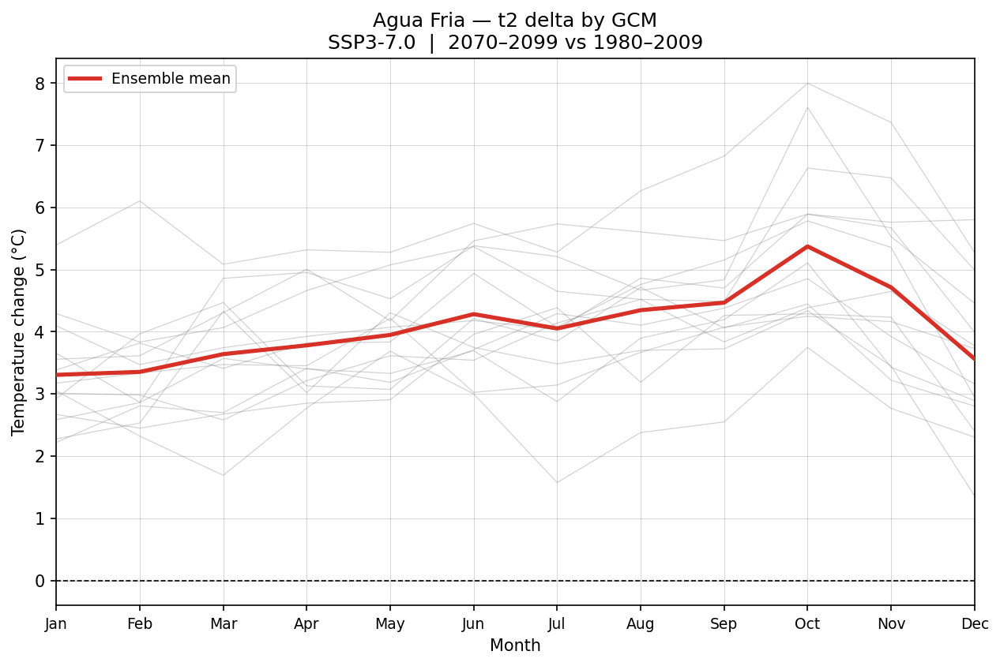
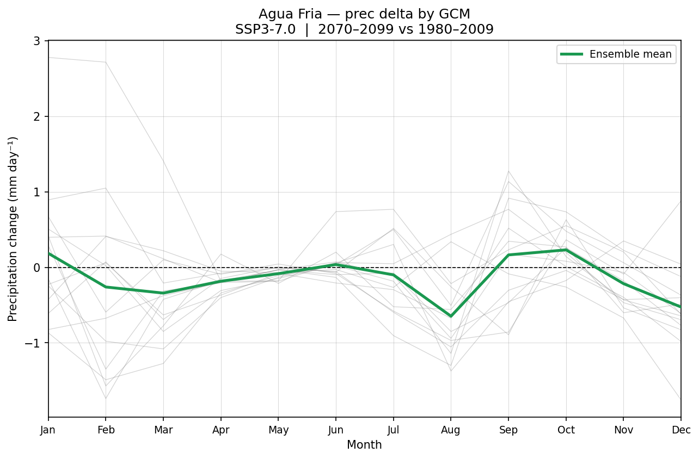

Per-basin GCM spaghetti plots — one line per model, bold ensemble mean.
Temperature in °C, precipitation in mm day⁻¹.
SSP3-7.0, 2070–2099 vs 1980–2009.

Temperature Δ — per-GCM spaghetti + ensemble mean

Precipitation Δ — per-GCM spaghetti + ensemble mean
Statewide context
Monthly precipitation Δ — ensemble mean choropleth